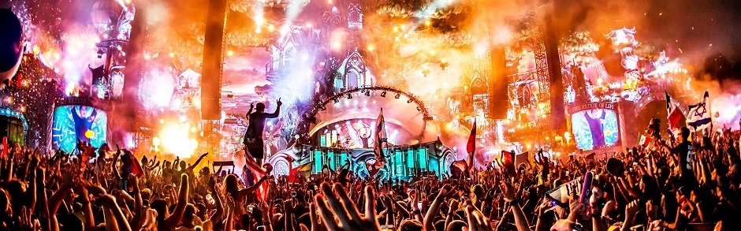

Wyjątkowe Festiwale Świata



festiwale na świecie
Festiwal (łac. festivus – radosny, wesoły, świąteczny) – szereg imprez artystycznych, przeważnie jednego typu (np. filmowych, muzycznych, teatralnych), będących przeglądem osiągnięć w danej dziedzinie, zorganizowanych w jednym czasie i pod wspólną nazwą, często ujętych w ramy konkursu.
Strona poświęcona niesamowitym festiwalom muzycznym na świecie, na których byłeś/aś lub chcesz być tam i przeżyć niesamowite i niezapomniane przeżycia związane z tymi festiwalami ;)